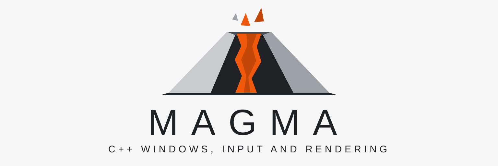

Windows, input and pixels for Basalt applications.
Basalt turns a widget tree into paint commands. Magma opens the windows, translates the input into Basalt events, decides when each frame starts, and draws the paint commands on the GPU or the CPU.
Features
Magma supplies the parts of a user interface that depend on the platform.
Basalt types throughout
Events arrive as basalt::event values, and the renderer takes basalt::paint_commands. Magma does not wrap them.
Frames paced by the display
One frame for each display refresh, and a frame for input at once when the previous frame is on the screen.
GPU and CPU backends
Metal, Vulkan and Direct3D 12 on the GPU, and Blend2D on the CPU. All give the same image within a small tolerance.
Damage-based redraw
The renderer keeps the last frame and redraws only the damaged areas. Commands outside them are skipped.
Platform services
Clipboard, cursors, file dialogs, input methods, live resize, full screen, and the system's dark mode.
Plain CMake
Use FetchContent, add_subdirectory, or an installed package. SDL and Blend2D stay private.
How it works
Your application keeps its own event loop. Magma has three parts, and the loop connects them to a Basalt widget tree.
Platform
Windows, input events, display ticks, the clipboard, cursors, file dialogs, and text input.
Frame scheduler
Decides when the next frame can start. It has no clock of its own, so the same rules apply in tests.
Renderer
Draws paint commands into a window, or into memory for tests and tools.
A small example
Create a platform, a window and a renderer. Then wait for events, give them to Basalt, and draw each frame when the scheduler says it is due.
- C++23, with
std::expectedand value semantics - Builds with GCC, Clang, Apple Clang and MSVC
- Apache License 2.0
auto platform = *magma::platform::create();
auto window = *platform.create_window({
.graphics = magma::preferred_graphics_api(
magma::backend_preference::automatic)});
auto renderer = *magma::renderer::create(platform, window);
auto scheduler = magma::frame_scheduler{};
while (running) {
platform.wait_for_events(scheduler.wait_timeout(now()));
for (auto const &e : platform.poll_events()) {
router.dispatch(e.event);
}
if (scheduler.frame_due(now())) {
scheduler.begin_frame(now());
// Basalt: layout, damage, paint.
renderer.render(commands, damage, background);
}
}Get started
Read the guide, or go to the source. Magma works with Basalt.